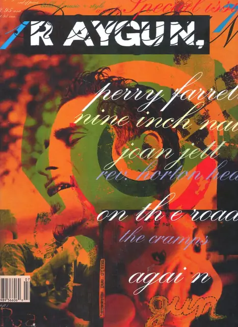
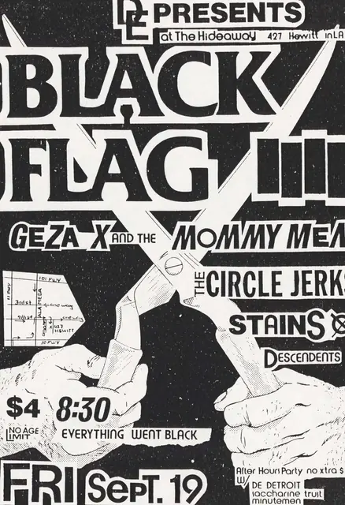
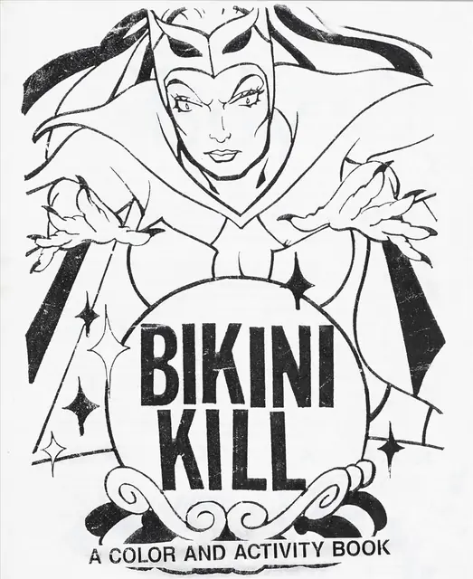
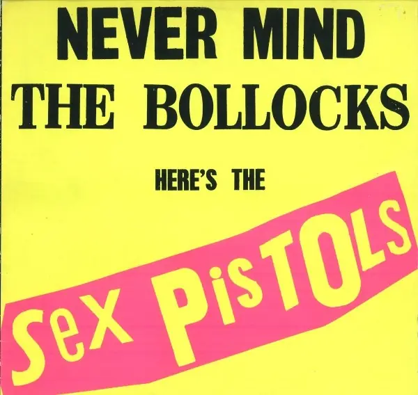
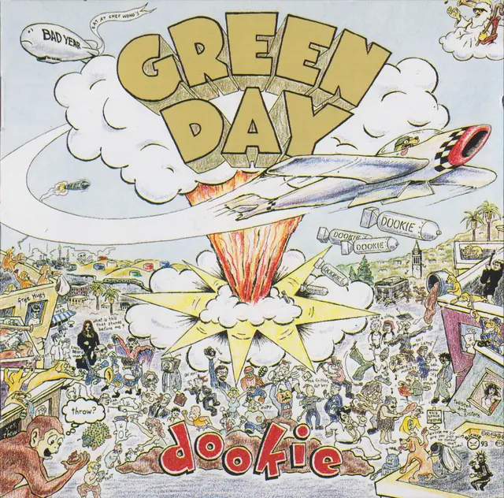
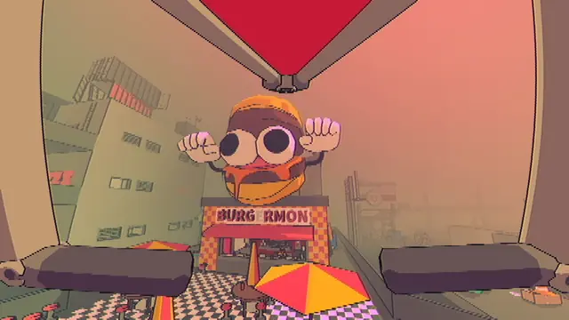
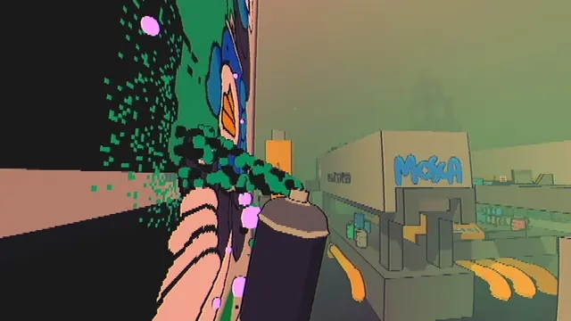
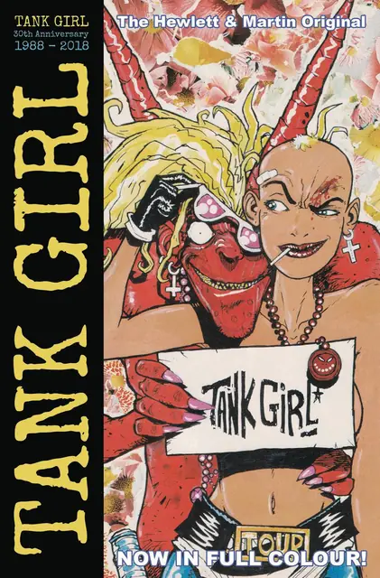
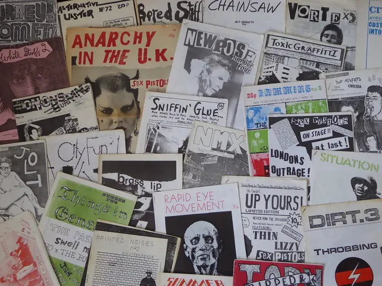
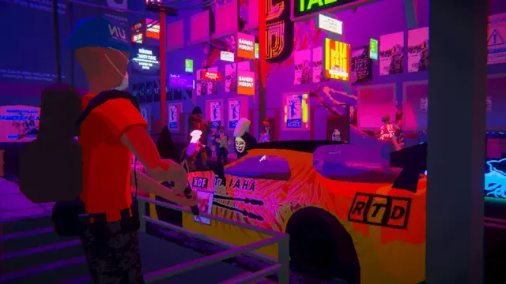

The feel
This is the look of people publishing for themselves. The photocopier turned any teenager into a publishing house and any bulletin board or wall into a place to answer back.1 Punk fanzines were fervid text and cut-and-paste pictures, Xeroxed and sold for next to nothing at gigs and in record shops, and Sniffin' Glue told its readers not to settle for what it wrote but to go and start their own.2
The roughness is the message. The punk scene's do-it-yourself attitude refused both what it saw as the elitism of high art and the sameness of the culture industry,1 and Dick Hebdige read the jumbled pages, spelling mistakes and cheap production of fanzines as signs of their urgency and immediacy.2 Grunge typography arrived in the 1990s the same way: in the words of the designer Carlos Segura, as a backlash, like punk music, against everything getting too clean.3
- photocopied
- loud
- cheap
- cut-up
- sweaty
- anti-polish
Where it comes from
Sniffin' Glue appeared in July 1976 and countless British fanzines followed its lead,2 while Jamie Reid set the Sex Pistols' song titles in cut-and-paste ransom-note lettering on a photocopied poster for their 100 Club gig that August.4 In southern California, Raymond Pettibon's drawings went onto zines, flyers and record covers for the punk scene around Black Flag and SST Records,5,1 and in the early 1990s riot grrrl spread through photocopied zines from Olympia and Washington, D.C.6 Grunge came to fruition on Seattle's independent Sub Pop label,7 and in 1992 Ray Gun, art-directed by David Carson, put that alternative scene into a music magazine for kids across America.8 Games picked it up through Road Rash on 3DO, which licensed Soundgarden and other A&M bands,9 Full Throttle (1995) and its biker rock,10 and the punk soundtrack of Tony Hawk's Pro Skater (1999).11
Core elements
Photocopier texture
Press COPY on this page to watch it happen. The photocopier was punk's press, turning any teenager into a publisher.1 A copy is black and white, with toner wherever a region is darker than its neighbourhood and white everywhere else, which is how GIMP's photocopy filter models it,12 and light text and pale images may not survive.13
Ransom-note letters
Titles are cut from print and pasted down like a ransom note. Jamie Reid cut God Save the Queen's lettering from newspaper headlines, a cheap look he first worked out at the radical magazine Suburban Press,14 and his 1976 poster for the Sex Pistols at the 100 Club sets its list of songs the same way.4
Grid-free expressive typography
Carson never used grids, and people said he was painting with letters and images.15 Under him Ray Gun printed pages back to front and upside down,8 his spreads slashed letters apart and overlapped words, and grunge type in general threw out the rules of kerning, leading and spacing.3 His own rule was never to mistake legibility for communication.3
Black and white with one loud colour
Early zines were simply typed or handwritten in black and white, and only later took on collage and a wider colour palette.2 When colour comes, it is loud: Reid's artwork for Never Mind the Bollocks is black type on white board, printed in fluorescent colours chosen to be noticed and to offend.16
Visible handwork
You should be able to see how it was made. Sniffin' Glue's first cover has its title scribbled in black felt-tip over a typed strap-line,2 and the kit is scissors, glue or tape, pens and markers, rubber stamps, stencils and a photocopier.17 Carson sees a renewed interest in being able to tell that a human made the work.15
Drawings paired with text
Raymond Pettibon's drawings play image against text,5 taking the forms of American popular culture and exposing their darker undercurrents.1 In games, Full Throttle's lead artist Peter Chan looked to Mike Mignola's Hellboy comics: minimal backgrounds, with silhouettes and dark spaces that draw the eye to the characters.10
How to do it
Simulate a photocopy
Use a photocopy filter: it darkens whatever is darker than its neighbourhood average and sets the rest to white.12 A large neighbourhood radius gives thick black areas and little detail, a small one less toner and more detail. Keep the amount of black at a middle value, because the maximum makes lines aliased.12
Cut the letters from print
Cut words and single letters from newspaper headlines and paste them down as a ransom note, as Reid did for God Save the Queen.14 Old magazines, junk mail and ticket stubs make collage stock, and glue or tape only has to hold them long enough to copy the page.17
Lay it out by eye
Skip the grid. Carson worked on art boards, moving things around until they said what he wanted, and saw no reason to use grids.15 Let words overlap and letters break apart, as his spreads did.3
Add colour at the print stage
Make the artwork in black on white and bring colour in only when you print. Reid's Never Mind the Bollocks artwork is black type on white board; the fluorescent colours came at the printing stage, chosen to be noticed.16
Design for the copier
Keep everything 1/4 inch in from the edges, so nothing gets cut off when the page is copied, and make text and images bold or high-contrast.13 Copiers and scanners all differ, so expect some trial and error before the full run.17
Fold and staple the zine
For a mini-zine, fold one sheet of printer paper into 8 pages: copy the single sheet, then fold it and make one cut with scissors.17 For a digest zine, fold 8.5 by 11 inch sheets in half and keep the page count divisible by 4.13 Sniffin' Glue's first issue was eight sides of A4, stapled in the top-left corner.2
Use silhouettes and dark space in 3D
Keep backgrounds minimal and use silhouettes and dark spaces to pull the eye to the characters, as Full Throttle did after Mike Mignola's Hellboy.10 For a toner finish, run the photocopy rule as a post-process: black where a pixel is darker than its neighbourhood average, white everywhere else.12
Cheat sheet
Do
- Run one test copy first. Copiers and scanners all differ, so expect some trial and error.17
- Mix typing with handwriting, the way Sniffin' Glue scrawled its title in felt-tip over a typed strap-line.2
- Fit the design to its subject and its audience. Carson says even the Bryan Ferry interview he set in Zapf Dingbats fitted the attitude of the magazine.15
- Put words with your pictures. Pettibon has used drawing and writing in tandem since the start of his career.5
Avoid
- Grunge fonts as a finishing touch. Once they were everywhere, grunge type became a novelty and a gimmick that looked cheap, formulaic and boring.3
- Pale type and pale photos. Light text and images don't always reproduce well on a copier.13
- Art that runs off the page. Copiers cut the edges off, so leave 1/4 inch clear.13
- Letting the software decide. Carson thinks designers have let computers make too many decisions for them.15
- Flannel and combat boots as shorthand. Once grunge was a fad, department stores sold knockoffs of both.7
Tools and tutorials
- Zines: Make Zines
How to fold a mini-zine or a half-fold zine, with a list of materials.17
- GIMP: Photocopy filter
What Mask radius, Sharpness, Percent black and Percent white do.12
- Photopea
A free image editor in the browser, with Levels, Noise and Threshold.
- Godot: your first 2D shader
Start here to write the photocopy rule from the how-to as a shader.
Palette
Black and white from Goo, yellow and pink from Never Mind the Bollocks, red and ochre from the first Ray Gun cover, orange from Ray Gun 17. Press COPY and the colour goes first.
Feel the vibe
Listen
Ray Gun's publisher called Sonic Youth the quintessential post-punk noise band of the time and put them in his first issue.8
YouTubeOne of riot grrrl's best-known anthems, from a band that made its own fanzines.6
YouTubeMudhoney were one of the bands that brought grunge to fruition on Seattle's Sub Pop label.7
YouTubeTony Hawk suggested Dead Kennedys for the first Pro Skater, and the game used a clean version of this song.11
YouTubeFrom Bleach, the album Nirvana made for Seattle's independent Sub Pop before Nevermind took punk's concerns to the mass market.18
YouTubeLive, from the biker band whose song Legacy is Full Throttle's theme.10
YouTube
More references










Games
- Full Throttle
Study the minimal backgrounds, silhouettes and dark spaces its lead artist took from Mike Mignola's Hellboy.10
- Tony Hawk's Pro Skater
For many players its soundtrack was a first introduction to punk.11
- SLUDGE LIFE
Study its crude polygons and how it turns tagging into the game.
- Umurangi Generation
Study its posters, stickers and graffiti on hard low-poly streets.
Film, art and more
- Ray Gun
Study Carson's issues: pages printed back to front and upside down, and a Bryan Ferry interview set in Dingbats.8
- David Carson
Also see his book The End of Print, with a foreword by David Byrne.15
- Jamie Reid
Study the ransom-note song titles on his 1976 Sex Pistols poster for the 100 Club.4
- Raymond Pettibon
Study his Black Flag flyers and how each drawing plays image against text.1,5
- Sniffin' Glue
Photocopied on eight sides of A4 and stapled in the corner, with a felt-tip title.2
- Riot grrrl
Photocopied zines were how the movement shared ideas, a decade before social media.6
- Tank Girl
Study Jamie Hewlett's scratchy pen line and collaged pages.
Sources
- 1Raymond Pettibon, Black Flag / Turrrrnnn Offff thhe Raaaadio
- 2Punk, Politics and British (fan)zines, 1976-84: 'While the world was dying, did you wonder why?'
- 3The Rise And Fall Of Grunge Typography
- 4Poster advertising The Sex Pistols, 1976
- 5Raymond Pettibon: A Pen of All Work
- 6Riot Grrrl
- 7Grunge
- 8Inside Ray Gun, 90s America’s bible of music and style
- 9Chris Cornell, Soundgarden And Road Rash
- 10Tim Schafer on the making of Full Throttle
- 11'I Know You From Tony Hawk': An Oral History of the 'Pro Skater' Soundtrack
- 12Photocopy
- 13Collins Library Zine Collection: Making Zines
- 14Jamie Reid, graphic designer who defined the visual character of the punk movement, has died aged 76
- 15Anti-grid Design Icon David Carson Says Computers Make You Lazy + Indie Magazines Needs to Liven Up
- 16Never Mind the Bollocks Here's the Sex Pistols (original artwork)
- 17Zines: Make Zines
- 18Nirvana